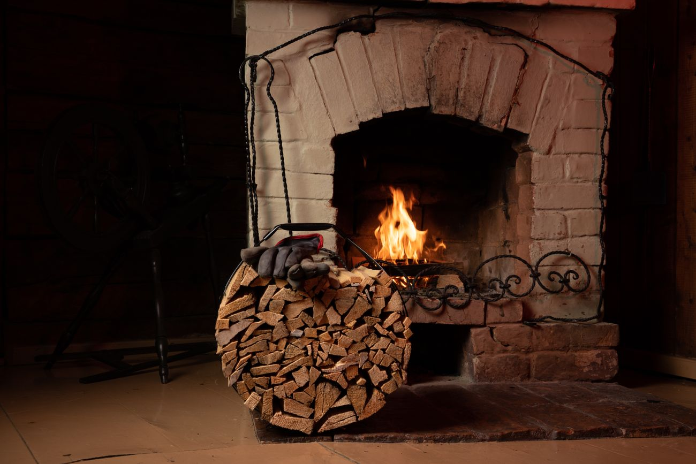

Печи, камины, барбекю
Кладка из кирпича печей, каминов, уличных печных комплексов; облицовка плиткой; монтаж каминных топок, печей для бань и саун, отопительных печей; каминные облицовки.
от 20 000 ₽Выберите, что строим, укажите размер — сайт покажет ориентир по ценам «от» и соберёт заявку на замер с адресом объекта и сроками.

Фото — иллюстрация (Pexels), не объект компании
Сайт на бесплатном конструкторе 2015 года: на телефоне не читается, названия и фото объектов нет, вместо заявки на расчёт — «Корзина пуста».
Направление, размер и цена «от» — сразу на экране; адрес объекта и удобный день замера — в той же заявке.
Заявка с размерами, адресом и сроками уходит в Telegram — на замер едут подготовленными.
✦Это концепт. С вашими фото и правками будет ещё лучше
Описание — с текущего сайта. Сроки работ уточняются.
Кладка из кирпича печей, каминов, уличных печных комплексов; облицовка плиткой; монтаж каминных топок, печей для бань и саун, отопительных печей; каминные облицовки.
от 20 000 ₽Каркасные дома, срубы ручной рубки из сибирского кедра, лиственницы и сосны, брусовое строительство; фундаменты, фасады, кровля, отделка.
каркас от 12 000 ₽/м²Наружные сети: водопровод, септики, прокол ГНБ. Внутренние: отопление, канализация, водоснабжение, тёплый пол; монтаж котлов.
цена уточняетсяЦены — из прайса на текущем сайте (данные 2015 года). Актуальность цен уточняется.
На текущем сайте раздел «Фотогалерея» пуст, работы показаны только в видео. Фото объектов уточняются — добавим ваши.
Ориентир считается по ценам «от» с текущего сайта. Точную стоимость назовут после замера.
Почта: 2401759@mail.ru. Часы — с 9:00 до 18:00, рабочие дни уточняются.